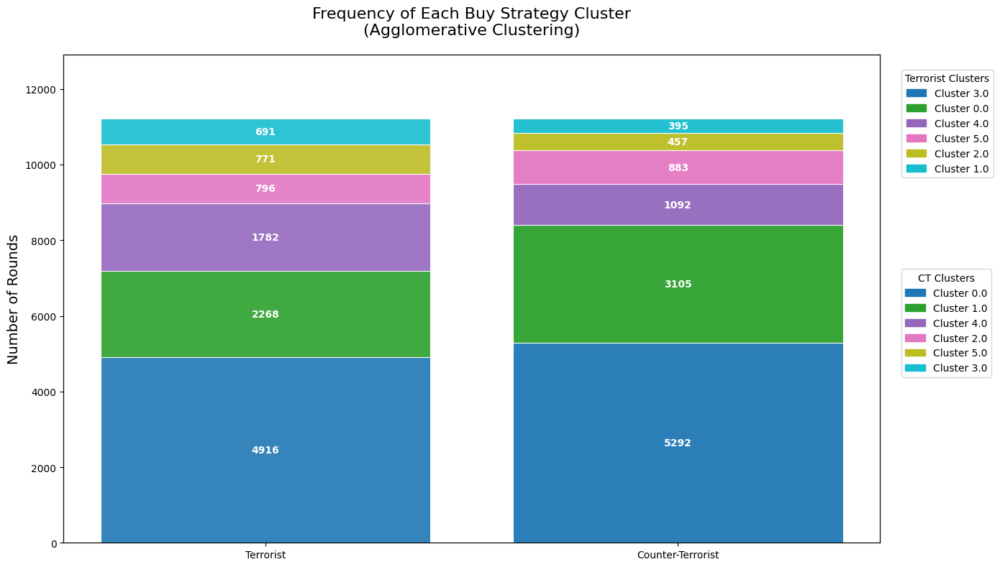
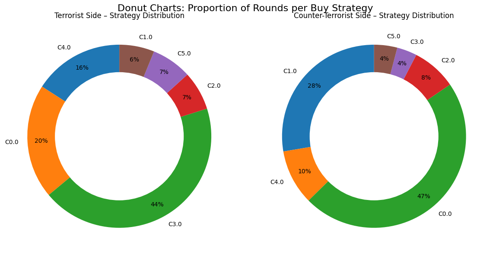
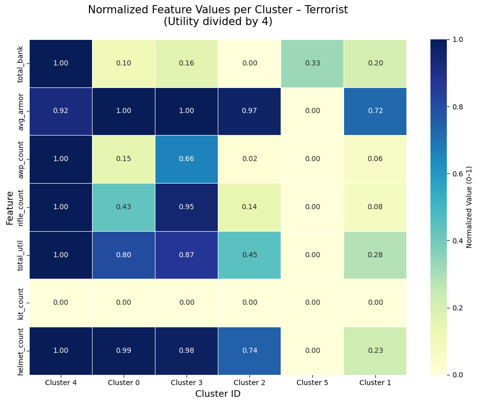
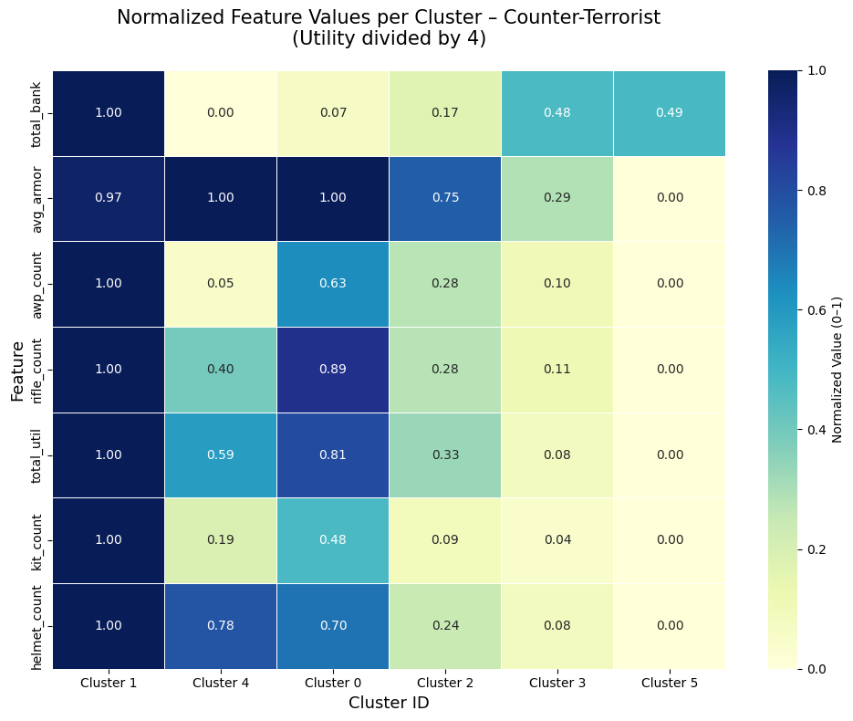
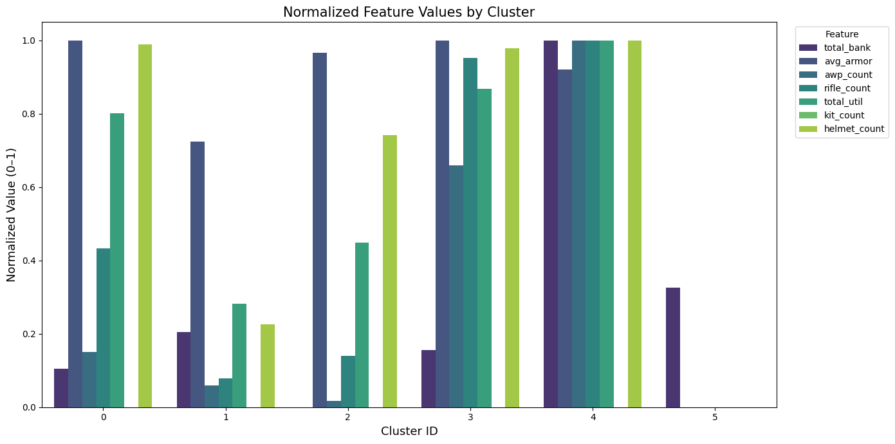
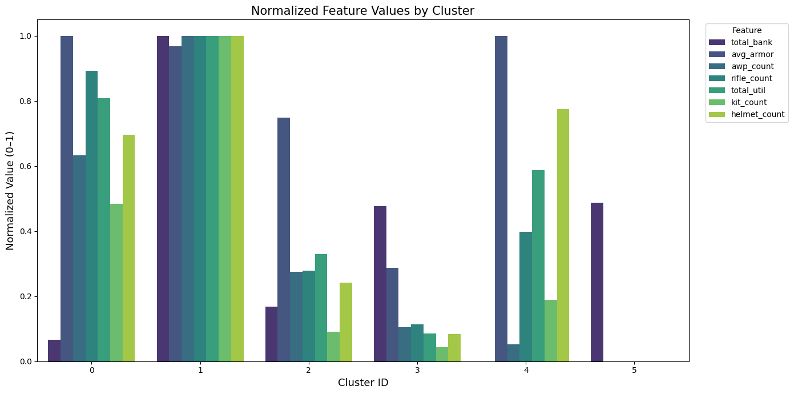
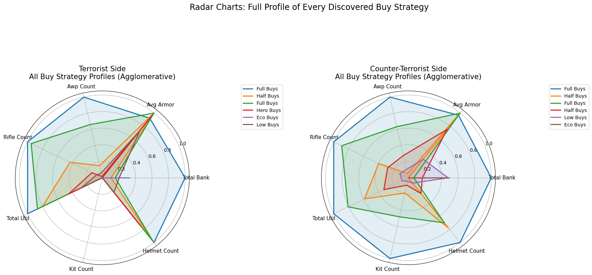
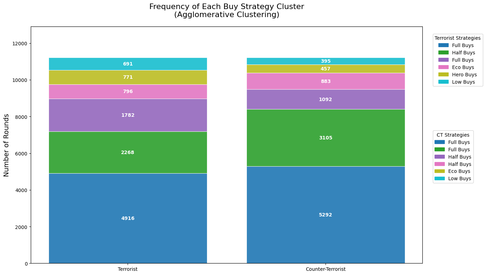

#imports
from sklearn.cluster import KMeans, AgglomerativeClustering
from sklearn.preprocessing import StandardScaler, RobustScaler #Standard Scaler seemed less impactful
from sklearn.metrics import silhouette_score
from math import pi
import matplotlib.pyplot as plt
import polars as pl
import numpy as np
import pandas as pd
import seaborn as snsCS2 Economy Clustering
read parsed data file
pl.enable_string_cache() # need this to pair values together between training and test setsdf = pl.read_parquet("all_cs2_majors_econ_data.parquet")df.head(5)
shape: (5, 12)
| match_id | round | total_rounds_played | player_name | current_equip_value | balance | armor_value | has_helmet | has_defuser | inventory | team_num | winner |
|---|---|---|---|---|---|---|---|---|---|---|---|
| str | f64 | f64 | str | f64 | f64 | f64 | bool | bool | list[str] | f64 | str |
| "ecstatic-vs-themongolz-nuke" | 1.0 | 0.0 | "salazar" | 850.0 | 150.0 | 100.0 | false | false | ["Butterfly Knife", "USP-S"] | 3.0 | "UNKNOWN" |
| "ecstatic-vs-themongolz-nuke" | 1.0 | 0.0 | "mzinho" | 850.0 | 150.0 | 100.0 | false | false | ["Butterfly Knife", "Glock-18"] | 2.0 | "UNKNOWN" |
| "ecstatic-vs-themongolz-nuke" | 1.0 | 0.0 | "Senzu" | 850.0 | 150.0 | 100.0 | false | false | ["Bayonet", "Glock-18"] | 2.0 | "UNKNOWN" |
| "ecstatic-vs-themongolz-nuke" | 1.0 | 0.0 | "Techno" | 850.0 | 150.0 | 100.0 | false | false | ["Butterfly Knife", "Glock-18", "C4 Explosive"] | 2.0 | "UNKNOWN" |
| "ecstatic-vs-themongolz-nuke" | 1.0 | 0.0 | "910" | 1350.0 | 150.0 | 100.0 | false | false | ["M9 Bayonet", "Glock-18", … "Flashbang"] | 2.0 | "UNKNOWN" |
remove first round of each half
df = df.filter(pl.col("round") != 1.0)
df = df.filter(pl.col("round") != 13.0)one hot encode inventory
#get uniique item list to parse for releevant items
unique_items = (
df.select("inventory")
.explode("inventory")
.unique()
.sort("inventory"))
items_list = unique_items["inventory"].to_list()
print(items_list)[None, 'AK-47', 'AUG', 'AWP', 'Bayonet', 'Bowie Knife', 'Butterfly Knife', 'C4 Explosive', 'CZ75-Auto', 'Classic Knife', 'Decoy Grenade', 'Desert Eagle', 'Dual Berettas', 'FAMAS', 'Falchion Knife', 'Five-SeveN', 'Flashbang', 'Flip Knife', 'Galil AR', 'Glock-18', 'Gut Knife', 'High Explosive Grenade', 'Huntsman Knife', 'Incendiary Grenade', 'Karambit', 'Kukri Knife', 'M4A1-S', 'M4A4', 'M9 Bayonet', 'MAC-10', 'MAG-7', 'MP5-SD', 'MP7', 'MP9', 'Molotov', 'Navaja Knife', 'Nomad Knife', 'Nova', 'P2000', 'P250', 'P90', 'Paracord Knife', 'R8 Revolver', 'SG 553', 'SSG 08', 'Shadow Daggers', 'Skeleton Knife', 'Smoke Grenade', 'Stiletto Knife', 'Survival Knife', 'Talon Knife', 'Tec-9', 'UMP-45', 'USP-S', 'Ursus Knife', 'XM1014', 'Zeus x27', 'knife', 'knife_t']#pull out relevant items to list, some items are cosmetics which don't effect performance
relevant_items = ['AK-47', 'AUG', 'AWP', 'Decoy Grenade', 'Desert Eagle', 'Dual Berettas', 'FAMAS',
'Five-SeveN', 'Flashbang', 'Galil AR', 'Glock-18', 'High Explosive Grenade',
'Incendiary Grenade', 'M4A1-S', 'M4A4', 'MAC-10', 'MAG-7', 'MP5-SD', 'MP7', 'MP9',
'Molotov', 'Nova', 'P2000', 'P250', 'P90', 'R8 Revolver', 'SG 553', 'SSG 08',
'Smoke Grenade', 'Tec-9', 'UMP-45', 'USP-S', 'XM1014', 'Zeus x27']
df = df.with_columns([
pl.col("inventory").list.contains(item)
.cast(pl.Int8).alias(item)
for item in relevant_items])# replace team_num with something simpler, CT = 1, T=0
df = df.with_columns(pl.col("team_num").replace({3.0: 1, 2.0: 0}).cast(pl.Int8).alias("team_num"))
# replace winner with similar values, setting corrupted rows to 99
df = df.with_columns(pl.col("winner").replace({"CT": 1, "T": 0, "UNKNOWN": 99}).fill_null(99).cast(pl.Int8))#drop player name and inventory cause we don't need the former and expanded the latter
df = df.drop(["player_name", "inventory"])# match id is an awkward string, but it's useful for grouping by game
# we'll turn this categorical variable into a simpler numeric representation and keep a reference df to make the connection simpler
df = df.with_columns(pl.col("match_id").cast(pl.Categorical))
match_reference = (
df.select("match_id")
.unique()
.with_columns(id_value = pl.col("match_id").to_physical())
.select(["id_value", "match_id"])
.sort("id_value"))
df = df.with_columns(pl.col("match_id").to_physical())match_reference.head()
shape: (5, 2)
| id_value | match_id |
|---|---|
| u32 | cat |
| 0 | "ecstatic-vs-themongolz-nuke" |
| 1 | "imperial-vs-metizport-m2-dust2" |
| 2 | "legacy-vs-red-canids-nuke" |
| 3 | "liquid-vs-b8-mirage" |
| 4 | "mouz-vs-spirit-m2-train" |
#clean up column names so they're less annoying
df = df.rename({
col: col.lower().replace(" ", "_").replace("-", "_")
for col in df.columns
})# create lists for certain weapon/equipment categories categories
awp = ['awp']
full_rifles = ['ak_47', 'm4a1_s', 'm4a4', 'aug', 'sg_553']
half_rifles = ['galil_ar', 'famas', 'ssg_08']
smgs = ['mp9', 'mp7', 'ump_45', 'p90', 'mac_10', 'mp5_sd', 'nova']
shotguns = ['xm1014','mag_7','nova']
poor_buys = ['p250', 'desert_eagle', 'dual_berettas', 'five_seven', 'tec_9', 'r8_revolver', 'zeus_x27']
utility_buys = ['flashbang', 'smoke_grenade', 'high_explosive_grenade', 'molotov', 'incendiary_grenade', 'decoy_grenade']
base_weapons = ['glock_18', 'usp_s', 'p2000']
equipment_columns = [
'ak_47', 'aug', 'awp', 'decoy_grenade', 'desert_eagle', 'dual_berettas',
'famas', 'five_seven', 'flashbang', 'galil_ar', 'glock_18',
'high_explosive_grenade', 'incendiary_grenade', 'm4a1_s', 'm4a4', 'mac_10',
'mag_7', 'mp5_sd', 'mp7', 'mp9', 'molotov', 'nova', 'p2000', 'p250', 'p90',
'r8_revolver', 'sg_553', 'ssg_08', 'smoke_grenade', 'tec_9', 'ump_45',
'usp_s', 'xm1014', 'zeus_x27', 'armor_value', 'has_helmet', 'has_defuser']number_of_unknown_rounds = df.filter(pl.col("winner")==99).height
known_rounds = df.filter(pl.col("winner")!=99).heightprint("total unknown winning rounds ", number_of_unknown_rounds)
print("total rounds with a winner ", known_rounds)
print(f" {round((number_of_unknown_rounds/known_rounds)*100, 2)}% of rounds have an unlabeled winner")total unknown winning rounds 880
total rounds with a winner 112445
0.78% of rounds have an unlabeled winnertrain_df = df.filter(pl.col("winner") != 99) # filter unknown winners
train_df = train_df.drop_nulls(subset=["team_num"]) #remove null rows (seemingly botched from the demo)#combine individual players into counts per team
team_stats = train_df.group_by(["match_id", "round", "team_num", "winner"]).agg([
pl.col("current_equip_value").sum().alias("total_equip_val"),
pl.col("balance").sum().alias("total_bank"),
pl.col("armor_value").mean().alias("avg_armor"),
pl.col("has_helmet").sum().alias("helmet_count"),
pl.col("has_defuser").sum().alias("kit_count"),
pl.col(awp).sum().alias("awp_count"),
pl.sum_horizontal(pl.col(full_rifles)).sum().alias("rifle_count"),
pl.sum_horizontal(pl.col(utility_buys)).sum().alias("total_util"),
pl.sum_horizontal(pl.col(half_rifles)).sum().alias("half_rifle_count"),
pl.sum_horizontal(pl.col(smgs)).sum().alias("small_buy_count"),
pl.sum_horizontal(pl.col(shotguns)).sum().alias("shotgun_buy_count"),
pl.sum_horizontal(pl.col(poor_buys)).sum().alias("upg_pst")])# split by side
t_stats = team_stats.filter(pl.col("team_num") == 0)
ct_stats = team_stats.filter(pl.col("team_num") == 1)# First Model, KMeans Cluster for Novel Strategies
def km_analyze_side(df, side_name, n_clusters=10):
buy_features = [
'total_bank',
'avg_armor', 'helmet_count', 'kit_count',
'awp_count', 'rifle_count', 'total_util', 'half_rifle_count',
'small_buy_count','shotgun_buy_count', 'upg_pst'] #selected features for domain knowledge
X = df.select(buy_features).to_numpy()
scaler = RobustScaler()
X_scaled = scaler.fit_transform(X)
kmeans = KMeans(n_clusters=n_clusters, n_init=20)
kmeans.fit(X_scaled)
real_centers = scaler.inverse_transform(kmeans.cluster_centers_)
centroids_df = (pl.DataFrame(real_centers, schema=buy_features, orient="row").with_row_index(name="cluster_id"))
labeled_df = df.with_columns([pl.Series(name="cluster_id", values=kmeans.labels_), (pl.col("team_num") == pl.col("winner")).alias("won_round")])
report = (
labeled_df.group_by("cluster_id")
.agg([
pl.len().alias("times_used"),
pl.mean("won_round").alias("win_rate")])
.join(centroids_df, on="cluster_id", how="left")
.sort("win_rate", descending=True))
print(f"\n=== {side_name} ===")
print(f"{'ID':<3} | {'Win %':<6} | {'Used':<5} | {'Bank':<9} | {'Armor':<5} | {'Awps':<4} | {'Rifles':<6} | {'Half-R':<6} | {'Smalls':<6} | {'Shotguns':<7} | {'Pistols':<7} | {'Util':<5} | {'Kits':<4} | {'Helmets'}")
for row in report.iter_rows(named=True):
cid = row['cluster_id']
wr = row['win_rate'] * 100
count = row['times_used']
bank = row['total_bank']
armor = row['avg_armor']
awps = row['awp_count']
rifles = row['rifle_count']
half_rifles = row['half_rifle_count']
smalls = row['small_buy_count']
shotguns = row['shotgun_buy_count']
poors = row['upg_pst']
util = row['total_util']
kits = row['kit_count']
helmets = row['helmet_count']
print(f"{cid:<3} | {wr:>4.1f} | {count:<5} | {bank:<5.0f} | {armor:<5.1f} | {awps:<4.1f} | {rifles:<6.1f} | {half_rifles:<6.1f} | {smalls:<6.1f} | {shotguns:>7.1f} | {poors:<7.1f} | {util:<5.1f} | {kits:<4.1f} | {helmets:.1f}")
score = silhouette_score(X_scaled, kmeans.labels_)
print(f"\nK-Means Silhouette Score: {score:.3f}")
return report, labeled_dft_report, t_labeled = km_analyze_side(t_stats, "TERRORIST")
ct_report, ct_labeled = km_analyze_side(ct_stats, "COUNTER-TERRORIST")
=== TERRORIST ===
ID | Win % | Used | Bank | Armor | Awps | Rifles | Half-R | Smalls | Shotguns | Pistols | Util | Kits | Helmets
7 | 95.4 | 1020 | 16733 | 80.6 | 0.4 | 4.2 | 0.2 | 0.1 | -0.0 | 0.8 | 17.8 | 0.0 | 4.9
3 | 85.3 | 1439 | 27850 | 93.2 | 0.8 | 4.2 | 0.0 | 0.1 | -0.0 | 1.2 | 17.8 | 0.0 | 5.0
9 | 74.6 | 778 | 4403 | 97.6 | 0.1 | 1.8 | 1.0 | 1.8 | -0.0 | 0.7 | 14.5 | 0.0 | 5.0
5 | 54.9 | 1485 | 3568 | 97.1 | 0.1 | 1.6 | 2.6 | 0.4 | -0.0 | 0.6 | 13.3 | 0.0 | 4.8
1 | 50.8 | 2137 | 6865 | 97.0 | 1.0 | 3.7 | 0.1 | 0.0 | -0.0 | 0.6 | 16.2 | 0.0 | 4.9
8 | 33.1 | 2162 | 3822 | 98.3 | 0.0 | 4.5 | 0.3 | 0.1 | 0.0 | 0.3 | 15.0 | 0.0 | 5.0
4 | 3.7 | 673 | 3274 | 94.1 | 0.1 | 0.8 | 0.5 | 0.2 | -0.0 | 3.3 | 8.6 | 0.0 | 3.8
0 | 2.0 | 796 | 10226 | 3.7 | 0.0 | 0.1 | 0.1 | 0.0 | -0.0 | 1.5 | 0.8 | 0.0 | 0.1
6 | 1.8 | 329 | 8808 | 50.8 | 0.1 | 0.5 | 0.2 | 0.0 | 0.0 | 2.8 | 4.2 | 0.0 | 1.1
2 | 1.7 | 405 | 6001 | 88.0 | 0.0 | 0.4 | 0.3 | 0.1 | 0.0 | 3.8 | 6.8 | 0.0 | 1.3
K-Means Silhouette Score: 0.263
=== COUNTER-TERRORIST ===
ID | Win % | Used | Bank | Armor | Awps | Rifles | Half-R | Smalls | Shotguns | Pistols | Util | Kits | Helmets
8 | 97.1 | 912 | 32388 | 95.3 | 0.9 | 4.0 | 0.1 | 0.0 | 0.0 | 2.2 | 19.6 | 4.2 | 4.9
4 | 81.4 | 3045 | 12535 | 98.1 | 1.0 | 3.9 | 0.0 | 0.1 | 0.0 | 1.0 | 19.2 | 3.4 | 4.3
0 | 56.4 | 587 | 9203 | 86.5 | 0.8 | 3.8 | 0.1 | 0.2 | 0.0 | 0.7 | 17.4 | 2.5 | 3.6
6 | 54.2 | 1184 | 3163 | 98.9 | 0.2 | 1.6 | 0.3 | 2.5 | 0.0 | 1.0 | 12.0 | 0.8 | 3.3
2 | 40.8 | 975 | 3130 | 99.0 | 0.2 | 1.7 | 1.2 | 0.8 | 0.0 | 1.5 | 11.3 | 0.7 | 2.7
5 | 34.2 | 2905 | 2653 | 99.1 | 0.6 | 4.0 | 0.1 | 0.2 | 0.0 | 0.3 | 15.6 | 1.4 | 2.6
3 | 5.5 | 526 | 5486 | 79.6 | 0.2 | 0.6 | 0.5 | 1.1 | 0.0 | 2.3 | 6.2 | 0.2 | 1.0
1 | 2.1 | 387 | 11045 | 28.4 | 0.1 | 0.5 | 0.2 | 0.2 | 0.0 | 2.1 | 2.3 | 0.2 | 0.4
9 | 1.2 | 242 | 9333 | 59.1 | 0.2 | 0.7 | 0.4 | 0.7 | 0.0 | 2.2 | 4.4 | 0.2 | 0.7
7 | 0.4 | 461 | 11185 | 0.2 | 0.0 | 0.0 | 0.0 | 0.0 | 0.0 | 1.2 | 0.7 | 0.0 | 0.0
K-Means Silhouette Score: 0.247# using agglomerate clustering to reenforce previous work
def agg_analyze_side(df, side_name, n_clusters=None, distance_threshold=75.0):
buy_features = ['total_bank', 'avg_armor', 'helmet_count', 'kit_count',
'awp_count', 'rifle_count', 'total_util', 'half_rifle_count',
'small_buy_count','shotgun_buy_count', 'upg_pst']
X = df.select(buy_features).to_numpy()
scaler = RobustScaler()
X_scaled = scaler.fit_transform(X)
agg = AgglomerativeClustering(
n_clusters=n_clusters, # instead of defining the number we want to see if there's a distance we can utilize to reach meta game standards
distance_threshold=distance_threshold,
linkage='ward')
labels = agg.fit_predict(X_scaled)
labeled_df = df.with_columns([
pl.Series(name="cluster_id", values=labels),
(pl.col("team_num") == pl.col("winner")).alias("won_round")])
centroids_df = (
labeled_df.group_by("cluster_id")
.agg([pl.mean(col) for col in buy_features]))
report = (
labeled_df.group_by("cluster_id")
.agg([
pl.len().alias("times_used"),
pl.mean("won_round").alias("win_rate")])
.join(centroids_df, on="cluster_id", how="left")
.sort("win_rate", descending=True))
print(f"\n=== {side_name} (Agglomerative, Found Clusters: {agg.n_clusters_}) ===")
print(f"{'ID':<3} | {'Win %':<6} | {'Used':<5} | {'Bank':<9} | {'Armor':<5} | {'Awps':<4} | {'Rifles':<6} | {'Half-R':<6} | {'Smalls':<6} | {'Shotguns':<7} | {'Pistols':<7} | {'Util':<5} | {'Kits':<4} | {'Helmets'}")
for row in report.iter_rows(named=True):
cid = row['cluster_id']
wr = row['win_rate'] * 100
count = row['times_used']
bank = row['total_bank']
armor = row['avg_armor']
awps = row['awp_count']
rifles = row['rifle_count']
half_rifles = row['half_rifle_count']
smalls = row['small_buy_count']
shotguns = row['shotgun_buy_count']
poors = row['upg_pst']
util = row['total_util']
kits = row['kit_count']
helmets = row['helmet_count']
print(f"{cid:<3} | {wr:>4.1f} | {count:<5} | {bank:<5.0f} | {armor:<5.1f} | {awps:<4.1f} | {rifles:<6.1f} | {half_rifles:<6.1f} | {smalls:<6.1f} | {shotguns:>7.1f} | {poors:<7.1f} | {util:<5.1f} | {kits:<4.1f} | {helmets:.1f}")
score = silhouette_score(X_scaled, labels)
print(f"\nAgglomerative Silhouette Score: {score:.3f}")
return report, labeled_dft_report, t_labeled = agg_analyze_side(t_stats, "TERRORIST")
ct_report, ct_labeled = agg_analyze_side(ct_stats, "COUNTER-TERRORIST")
=== TERRORIST (Agglomerative, Found Clusters: 6) ===
ID | Win % | Used | Bank | Armor | Awps | Rifles | Half-R | Smalls | Shotguns | Pistols | Util | Kits | Helmets
4 | 86.5 | 1782 | 25023 | 89.0 | 0.7 | 4.3 | 0.0 | 0.0 | 0.0 | 1.3 | 17.9 | 0.0 | 5.0
0 | 70.0 | 2268 | 5373 | 96.4 | 0.1 | 1.9 | 2.0 | 0.8 | 0.0 | 0.7 | 14.5 | 0.0 | 4.9
3 | 46.0 | 4916 | 6507 | 96.4 | 0.5 | 4.1 | 0.2 | 0.1 | 0.0 | 0.5 | 15.6 | 0.0 | 4.9
2 | 4.3 | 771 | 3074 | 93.4 | 0.0 | 0.7 | 0.8 | 0.3 | 0.0 | 3.0 | 8.4 | 0.0 | 3.7
5 | 2.0 | 796 | 10226 | 3.7 | 0.0 | 0.1 | 0.1 | 0.0 | 0.0 | 1.5 | 0.8 | 0.0 | 0.1
1 | 1.7 | 691 | 7558 | 70.8 | 0.1 | 0.4 | 0.2 | 0.1 | 0.0 | 3.5 | 5.6 | 0.0 | 1.2
Agglomerative Silhouette Score: 0.271
=== COUNTER-TERRORIST (Agglomerative, Found Clusters: 6) ===
ID | Win % | Used | Bank | Armor | Awps | Rifles | Half-R | Smalls | Shotguns | Pistols | Util | Kits | Helmets
1 | 82.8 | 3105 | 19472 | 95.8 | 1.0 | 3.9 | 0.0 | 0.1 | 0.0 | 1.4 | 19.2 | 3.6 | 4.4
4 | 56.3 | 1092 | 3311 | 99.0 | 0.1 | 1.6 | 0.4 | 2.5 | 0.0 | 1.1 | 11.6 | 0.7 | 3.4
0 | 47.7 | 5292 | 4373 | 98.8 | 0.6 | 3.5 | 0.3 | 0.3 | 0.0 | 0.7 | 15.7 | 1.8 | 3.0
2 | 5.5 | 883 | 6038 | 74.1 | 0.3 | 1.1 | 0.4 | 0.9 | 0.0 | 2.0 | 6.8 | 0.3 | 1.1
3 | 2.0 | 395 | 11031 | 28.4 | 0.1 | 0.5 | 0.2 | 0.2 | 0.0 | 2.1 | 2.3 | 0.2 | 0.4
5 | 0.4 | 457 | 11192 | 0.1 | 0.0 | 0.0 | 0.0 | 0.0 | 0.0 | 1.2 | 0.7 | 0.0 | 0.0
Agglomerative Silhouette Score: 0.239def agg_sensitivity_analysis(df, side_name):
buy_features = ['total_bank', 'avg_armor', 'helmet_count', 'kit_count',
'awp_count', 'rifle_count', 'total_util', 'half_rifle_count',
'small_buy_count','shotgun_buy_count', 'upg_pst']
X = df.select(buy_features).to_numpy()
X_scaled = RobustScaler().fit_transform(X)
thresholds = [50, 60, 70, 75, 80, 90, 100, 120]
print(f"\n=== Sensitivity Analysis: {side_name} (Agglomerative) ===")
print(f"{'Threshold':<10} | {'Clusters Formed':<15} | {'Silhouette Score'}")
print("-" * 50)
for t in thresholds:
agg = AgglomerativeClustering(n_clusters=None, distance_threshold=t, linkage='ward')
labels = agg.fit_predict(X_scaled)
if agg.n_clusters_ > 1:
sil_score = silhouette_score(X_scaled, labels)
print(f"{t:<10} | {agg.n_clusters_:<15} | {sil_score:.3f}")
else:
print(f"{t:<10} | {agg.n_clusters_:<15} | N/A (1 cluster)")agg_sensitivity_analysis(t_stats, "TERRORIST")
=== Sensitivity Analysis: TERRORIST (Agglomerative) ===
Threshold | Clusters Formed | Silhouette Score
--------------------------------------------------
50 | 9 | 0.206
60 | 6 | 0.271
70 | 6 | 0.271
75 | 6 | 0.271
80 | 5 | 0.257
90 | 5 | 0.257
100 | 4 | 0.326
120 | 4 | 0.326def plot_radar_all_clusters(t_report_agg, ct_report_agg):
features = ['total_bank', 'avg_armor', 'awp_count', 'rifle_count',
'total_util', 'kit_count', 'helmet_count']
# Use ALL clusters (sorted exactly as in your report table)
t_all = t_report_agg.to_pandas() # already sorted by win_rate descending
ct_all = ct_report_agg.to_pandas()
# Normalize 0-1 scale
t_norm = t_all[features].apply(lambda x: (x - x.min()) / (x.max() - x.min() + 1e-8), axis=0)
ct_norm = ct_all[features].apply(lambda x: (x - x.min()) / (x.max() - x.min() + 1e-8), axis=0)
categories = [f.replace('_', ' ').title() for f in features]
N = len(categories)
angles = [n / float(N) * 2 * pi for n in range(N)]
angles += angles[:1]
fig, axs = plt.subplots(1, 2, figsize=(18, 9), subplot_kw=dict(polar=True))
# Terrorist Side - All Clusters
ax = axs[0]
for idx, row in t_norm.iterrows():
values = row.tolist() + row.tolist()[:1]
cluster_id = t_all['cluster_id'].iloc[idx] # Use exact cluster_id from table
ax.plot(angles, values, linewidth=2.2, linestyle='solid',
label=f"Cluster {cluster_id}")
ax.fill(angles, values, alpha=0.12)
ax.set_xticks(angles[:-1])
ax.set_xticklabels(categories, fontsize=11)
ax.set_title("Terrorist Side\nAll Buy Strategy Profiles (Agglomerative)", fontsize=15, pad=25)
ax.legend(loc='upper right', bbox_to_anchor=(1.55, 1.05), fontsize=10)
# Counter-Terrorist Side - All Clusters
ax = axs[1]
for idx, row in ct_norm.iterrows():
values = row.tolist() + row.tolist()[:1]
cluster_id = ct_all['cluster_id'].iloc[idx]
ax.plot(angles, values, linewidth=2.2, linestyle='solid',
label=f"Cluster {cluster_id}")
ax.fill(angles, values, alpha=0.12)
ax.set_xticks(angles[:-1])
ax.set_xticklabels(categories, fontsize=11)
ax.set_title("Counter-Terrorist Side\nAll Buy Strategy Profiles (Agglomerative)", fontsize=15, pad=25)
ax.legend(loc='upper right', bbox_to_anchor=(1.55, 1.05), fontsize=10)
plt.suptitle("Radar Charts: Full Profile of Every Discovered Buy Strategy", fontsize=17, y=1.02)
plt.tight_layout()
plt.savefig("Figure_9_Radar_All_Clusters_Agglomerative.png", dpi=300, bbox_inches='tight')
plt.show()
# Run this after your agg_analyze_side calls
plot_radar_all_clusters(t_report, ct_report)
def plot_stacked_frequency_agg_separate_legends(t_report_agg, ct_report_agg):
# Use agglomerative reports (exact cluster_ids preserved)
t_df = t_report_agg.to_pandas()
ct_df = ct_report_agg.to_pandas()
# Normalize utility by dividing by 4 (max 4 grenades per player)
if 'total_util' in t_df.columns:
t_df['total_util_norm'] = t_df['total_util'] / 4
ct_df['total_util_norm'] = ct_df['total_util'] / 4
# Sort by times_used descending (most frequent at bottom)
t_df = t_df.sort_values("times_used", ascending=False).reset_index(drop=True)
ct_df = ct_df.sort_values("times_used", ascending=False).reset_index(drop=True)
fig, ax = plt.subplots(figsize=(14, 8))
# Color map – shared across both sides for visual consistency
max_clusters = max(len(t_df), len(ct_df))
colors = plt.cm.tab10(np.linspace(0, 1, max_clusters))
# Terrorist stacked bar
bottom_t = 0
t_handles = []
for i, row in t_df.iterrows():
cluster_id = row['cluster_id'] # exact ID from agglomerative table
height = row['times_used']
color = colors[i % len(colors)]
bar = ax.bar("Terrorist", height, bottom=bottom_t, color=color,
alpha=0.9, edgecolor='white', linewidth=0.8)
ax.text(0, bottom_t + height/2, f"{int(height)}",
ha='center', va='center', color='white', fontweight='bold', fontsize=10)
t_handles.append(plt.Rectangle((0,0),1,1, color=color, label=f"Cluster {cluster_id}"))
bottom_t += height
# Counter-Terrorist stacked bar
bottom_ct = 0
ct_handles = []
for i, row in ct_df.iterrows():
cluster_id = row['cluster_id'] # exact ID from agglomerative table
height = row['times_used']
color = colors[i % len(colors)]
bar = ax.bar("Counter-Terrorist", height, bottom=bottom_ct, color=color,
alpha=0.95, edgecolor='white', linewidth=0.8)
ax.text(1, bottom_ct + height/2, f"{int(height)}",
ha='center', va='center', color='white', fontweight='bold', fontsize=10)
ct_handles.append(plt.Rectangle((0,0),1,1, color=color, label=f"Cluster {cluster_id}"))
bottom_ct += height
# Labels and title
ax.set_ylabel("Number of Rounds", fontsize=14)
ax.set_title("Frequency of Each Buy Strategy Cluster\n(Agglomerative Clustering)", fontsize=16, pad=20)
ax.set_ylim(0, max(t_df['times_used'].sum(), ct_df['times_used'].sum()) * 1.15)
# Two separate legends
ax.legend(handles=t_handles, title="Terrorist Clusters",
bbox_to_anchor=(1.02, 0.98), loc='upper left', fontsize=10)
ax2 = ax.twinx() # invisible twin axis just for CT legend
ax2.set_yticks([])
ax2.legend(handles=ct_handles, title="CT Clusters",
bbox_to_anchor=(1.02, 0.45), loc='center left', fontsize=10)
plt.tight_layout()
plt.savefig("Figure_10_Stacked_Frequency_Agglomerative_Separate_Legends.png", dpi=300, bbox_inches='tight')
plt.show()
# Run after your agg_analyze_side calls
plot_stacked_frequency_agg_separate_legends(t_report, ct_report)
def donut_charts_per_side(t_report, ct_report):
t_df = t_report.to_pandas()
ct_df = ct_report.to_pandas()
fig, (ax1, ax2) = plt.subplots(1, 2, figsize=(12, 6))
# Terrorist
wedges, texts, autotexts = ax1.pie(t_df['times_used'], labels=[f"C{row['cluster_id']}" for _, row in t_df.iterrows()],
autopct='%1.0f%%', startangle=90, pctdistance=0.85,
colors=plt.cm.tab10(range(len(t_df))))
centre_circle = plt.Circle((0,0),0.70,fc='white')
ax1.add_artist(centre_circle)
ax1.set_title("Terrorist Side – Strategy Distribution")
# Counter-Terrorist
wedges, texts, autotexts = ax2.pie(ct_df['times_used'], labels=[f"C{row['cluster_id']}" for _, row in ct_df.iterrows()],
autopct='%1.0f%%', startangle=90, pctdistance=0.85,
colors=plt.cm.tab10(range(len(ct_df))))
centre_circle = plt.Circle((0,0),0.70,fc='white')
ax2.add_artist(centre_circle)
ax2.set_title("Counter-Terrorist Side – Strategy Distribution")
plt.suptitle("Donut Charts: Proportion of Rounds per Buy Strategy", fontsize=16)
plt.tight_layout()
plt.savefig("donut_frequency.png", dpi=300, bbox_inches='tight')
plt.show()
donut_charts_per_side(t_report, ct_report)
def plot_normalized_heatmap(report_df, side_name="Side"):
df = report_df.to_pandas()
# Divide utility by 4
if 'total_util' in df.columns:
df['total_util'] = df['total_util'] / 4
features = ['total_bank', 'avg_armor', 'awp_count', 'rifle_count',
'total_util', 'kit_count', 'helmet_count']
# Normalize to 0-1
norm = df[features].apply(lambda x: (x - x.min()) / (x.max() - x.min() + 1e-8))
norm.index = [f"Cluster {cid}" for cid in df['cluster_id']]
plt.figure(figsize=(10, 8))
sns.heatmap(norm.T, annot=True, fmt=".2f", cmap="YlGnBu", linewidths=0.5,
cbar_kws={'label': 'Normalized Value (0–1)'})
plt.title(f"Normalized Feature Values per Cluster – {side_name}\n"
"(Utility divided by 4)", fontsize=15, pad=20)
plt.ylabel("Feature", fontsize=13)
plt.xlabel("Cluster ID", fontsize=13)
plt.tight_layout()
plt.savefig(f"heatmap_normalized_{side_name.lower()}.png", dpi=300, bbox_inches='tight')
plt.show()
# Run
plot_normalized_heatmap(t_report, "Terrorist")
plot_normalized_heatmap(ct_report, "Counter-Terrorist")

def grouped_bar_all_features(report_df, side_name="Side"):
df = report_df.to_pandas()
if 'total_util' in df.columns:
df['total_util'] = df['total_util'] / 4
features = ['total_bank', 'avg_armor', 'awp_count', 'rifle_count',
'total_util', 'kit_count', 'helmet_count']
# Normalize
norm = df[features].apply(lambda x: (x - x.min()) / (x.max() - x.min() + 1e-8))
norm['cluster_id'] = df['cluster_id']
melted = norm.melt(id_vars='cluster_id', var_name='Feature', value_name='Normalized Value')
plt.figure(figsize=(14, 7))
sns.barplot(data=melted, x='cluster_id', y='Normalized Value', hue='Feature', palette='viridis')
plt.title(f"Normalized Feature Values by Cluster", fontsize=15)
plt.xlabel("Cluster ID", fontsize=13)
plt.ylabel("Normalized Value (0–1)", fontsize=13)
plt.legend(title="Feature", bbox_to_anchor=(1.02, 1), loc='upper left')
plt.tight_layout()
plt.savefig(f"grouped_bar_{side_name.lower()}.png", dpi=300, bbox_inches='tight')
plt.show()
grouped_bar_all_features(t_report, "Terrorist")
grouped_bar_all_features(ct_report, "Counter-Terrorist")

# Define the new cluster labels from user input
t_cluster_labels = {
0: "Half Buys",
1: "Low Buys",
2: "Hero Buys",
3: "Full Buys",
4: "Full Buys",
5: "Eco Buys"
}
ct_cluster_labels = {
0: "Full Buys",
1: "Full Buys",
2: "Half Buys",
3: "Low Buys",
4: "Half Buys",
5: "Eco Buys"
}
def plot_radar_all_clusters(t_report_agg, ct_report_agg):
features = ['total_bank', 'avg_armor', 'awp_count', 'rifle_count',
'total_util', 'kit_count', 'helmet_count']
# Terrorist - all clusters
t_all = t_report_agg.to_pandas()
if 'total_util' in t_all.columns:
t_all['total_util'] = t_all['total_util'] / 4
t_norm = t_all[features].apply(lambda x: (x - x.min()) / (x.max() - x.min() + 1e-8), axis=0)
# Counter-Terrorist - all clusters
ct_all = ct_report_agg.to_pandas()
if 'total_util' in ct_all.columns:
ct_all['total_util'] = ct_all['total_util'] / 4
ct_norm = ct_all[features].apply(lambda x: (x - x.min()) / (x.max() - x.min() + 1e-8), axis=0)
categories = [f.replace('_', ' ').title() for f in features]
N = len(categories)
angles = [n / float(N) * 2 * pi for n in range(N)]
angles += angles[:1]
fig, axs = plt.subplots(1, 2, figsize=(18, 9), subplot_kw=dict(polar=True))
# Terrorist Side
ax = axs[0]
for idx, row in t_norm.iterrows():
cluster_id = t_all['cluster_id'].iloc[idx]
label = t_cluster_labels.get(cluster_id, f"Cluster {cluster_id}") # Use new label
values = row.tolist() + row.tolist()[:1]
ax.plot(angles, values, linewidth=2.2, linestyle='solid', label=label)
ax.fill(angles, values, alpha=0.12)
ax.set_xticks(angles[:-1])
ax.set_xticklabels(categories, fontsize=11)
ax.set_title("Terrorist Side\nAll Buy Strategy Profiles (Agglomerative)", fontsize=15, pad=25)
ax.legend(loc='upper right', bbox_to_anchor=(1.55, 1.05), fontsize=10)
# Counter-Terrorist Side
ax = axs[1]
for idx, row in ct_norm.iterrows():
cluster_id = ct_all['cluster_id'].iloc[idx]
label = ct_cluster_labels.get(cluster_id, f"Cluster {cluster_id}") # Use new label
values = row.tolist() + row.tolist()[:1]
ax.plot(angles, values, linewidth=2.2, linestyle='solid', label=label)
ax.fill(angles, values, alpha=0.12)
ax.set_xticks(angles[:-1])
ax.set_xticklabels(categories, fontsize=11)
ax.set_title("Counter-Terrorist Side\nAll Buy Strategy Profiles (Agglomerative)", fontsize=15, pad=25)
ax.legend(loc='upper right', bbox_to_anchor=(1.55, 1.05), fontsize=10)
plt.suptitle("Radar Charts: Full Profile of Every Discovered Buy Strategy", fontsize=17, y=1.02)
plt.tight_layout()
plt.savefig("Figure_9_Radar_All_Clusters_Agglomerative.png", dpi=300, bbox_inches='tight')
plt.show()
# Run this after your agg_analyze_side calls
plot_radar_all_clusters(t_report, ct_report)
def plot_stacked_frequency_agg_separate_legends(t_report_agg, ct_report_agg):
# Convert to pandas – clusters are already in order from your agg_analyze_side
t_df = t_report_agg.to_pandas()
ct_df = ct_report_agg.to_pandas()
# Normalize utility by dividing by 4
if 'total_util' in t_df.columns:
t_df['total_util_norm'] = t_df['total_util'] / 4
ct_df['total_util_norm'] = ct_df['total_util'] / 4
# Sort by times_used descending
t_df = t_df.sort_values("times_used", ascending=False).reset_index(drop=True)
ct_df = ct_df.sort_values("times_used", ascending=False).reset_index(drop=True)
fig, ax = plt.subplots(figsize=(14, 8))
# Color map
max_clusters = max(len(t_df), len(ct_df))
colors = plt.cm.tab10(np.linspace(0, 1, max_clusters))
# Terrorist stacked bar
bottom_t = 0
t_handles = []
for i, row in t_df.iterrows():
cluster_id = row['cluster_id']
label = t_cluster_labels.get(cluster_id, f"Cluster {cluster_id}") # Use new label
height = row['times_used']
color = colors[i % len(colors)]
ax.bar("Terrorist", height, bottom=bottom_t, color=color,
alpha=0.9, edgecolor='white', linewidth=0.8)
ax.text(0, bottom_t + height/2, f"{int(height)}",
ha='center', va='center', color='white', fontweight='bold', fontsize=10)
t_handles.append(plt.Rectangle((0,0),1,1, color=color, label=label))
bottom_t += height
# Counter-Terrorist stacked bar
bottom_ct = 0
ct_handles = []
for i, row in ct_df.iterrows():
cluster_id = row['cluster_id']
label = ct_cluster_labels.get(cluster_id, f"Cluster {cluster_id}") # Use new label
height = row['times_used']
color = colors[i % len(colors)]
ax.bar("Counter-Terrorist", height, bottom=bottom_ct, color=color,
alpha=0.9, edgecolor='white', linewidth=0.8)
ax.text(1, bottom_ct + height/2, f"{int(height)}",
ha='center', va='center', color='white', fontweight='bold', fontsize=10)
ct_handles.append(plt.Rectangle((0,0),1,1, color=color, label=label))
bottom_ct += height
# Labels & title
ax.set_ylabel("Number of Rounds", fontsize=14)
ax.set_title("Frequency of Each Buy Strategy Cluster\n(Agglomerative Clustering)", fontsize=16, pad=20)
ax.set_ylim(0, max(t_df['times_used'].sum(), ct_df['times_used'].sum()) * 1.15)
# Two separate legends with new labels
ax.legend(handles=t_handles, title="Terrorist Strategies",
bbox_to_anchor=(1.02, 0.98), loc='upper left', fontsize=10)
ax2 = ax.twinx() # invisible twin for CT legend
ax2.set_yticks([])
ax2.legend(handles=ct_handles, title="CT Strategies",
bbox_to_anchor=(1.02, 0.45), loc='center left', fontsize=10)
plt.tight_layout()
plt.savefig("Figure_10_Stacked_Frequency_Agglomerative_Separate_Legends.png", dpi=300, bbox_inches='tight')
plt.show()
# Run after your agg_analyze_side calls
plot_stacked_frequency_agg_separate_legends(t_report, ct_report)